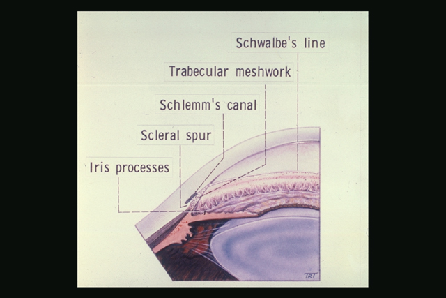
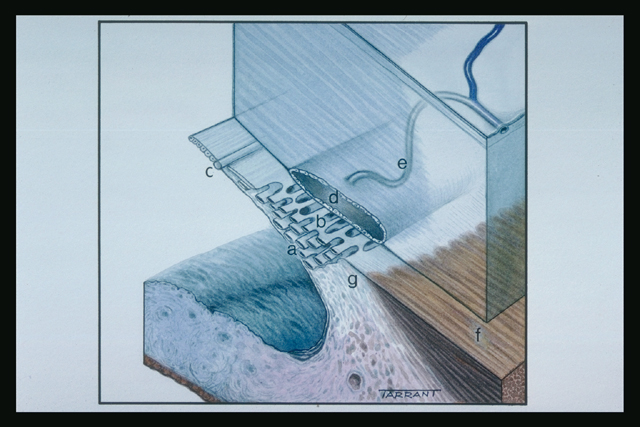

Trabecular meshwork
* Định nghĩa:
+ Hệ thống bè, mạng bè

Hình: Hệ thống bè và những cấu trúc liên quan
+ Mạng bè là một vùng với mô liên kết nằm ở góc tiền phòng, gồm nhiều lớp mà mỗi lớp chứa mô liên kết collagenous được bao phủ bởi một lớp nội mô liên tục. Nó bao gồm 3 lớp:
- Mạng bè bồ đào (a): Là phần trong cùng, chứa những mạng giống những sợi dây đan với nhau kéo dài từ chân mống mắt đến đường Schwalbe. Khoảng không bên trong là khá lớn và ít đề kháng lại với thủy dịch đi qua.
- Mạng bè củng giác mạc (b) tạo thành một phần ở giữa lớn hơn kéo dài từ cựa củng mạc đến đường Schwalbe. Mạng bè ở như một phiến mỏng với khoảng bên trong bè nhỏ hơn bè bồ đào.
- Bè nội mô (the endothelial hoặc juxtacanalicular meshwork) là phần ngoài cùng nối với bè củng giác mạc với thành trong là nội mô của ống Schlemm. Cấu tạo mô ở vùng này cho thấy là một vùng chính trong việc đề kháng bình thường với lưu thông thủy dịch.

Hình: Cấu trúc bè (a) Mạng bè bồ đào (b) Mạng bè củng giác mạc (c) Đường Schwalbe (d) Ống Schlemm (e) Kênh chọn lọc (f) Cơ thể mi dài (g) Cựa củng mạc